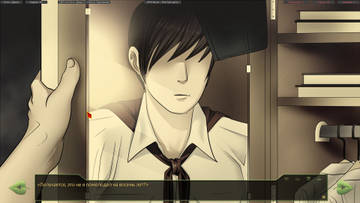

31 Славя » Славя-классик рут » 2018-02-27 12:37:14
Regolas
Какой же я тупоооой, спасибо. Надо будет перечитать.

7 дней лета |
Вы здесь » 7 дней лета » Результаты поиска
Regolas
Какой же я тупоооой, спасибо. Надо будет перечитать.
Одинточкаодин-юзеры, поделитесь пожалуйста с древним, просвятите - есть ли какой-то мод-селектор на оную версию? А то меня уже жутко зае[цензура] лазать постоянно через "начать игру" - "моды" - "7дл".
Мне казалось, рут Слави даёт ответы.
Все концовки прочитал, но не допёр.
И еще: прям чувствую, что спрошу сейчас глупость, НО - почему нельзя просто так же отключить питание от радио с гуделкой, как его включают в третьем дне, и спокойно избавиться от оной?
Вроде по теме, а вроде и нет: если Юля - робот Шурика, то как она обзавелась людской кожей и та ли эта самая Юля - проводник между мирами?
salotor
Благодарность.
Я тут трейс на Славя-кл поймал, когда Саныч Сёмушке рассказывает, что произошло (после выбора "Да, как Сёмушка" в автобусе).
I'm sorry, but an uncaught exception occurred.
While running game code:
File "game/scenario_alt/Config/start_menu_7dl.rpy", line 357, in script call
File "game/scenario_alt/Scenario/Raw/alt_route_sl_cl.rpy", line 16011, in script
File "game/scenario_alt/Scenario/Raw/alt_route_sl_cl.rpy", line 16011, in python
File "game/scenario_alt/Config/conf_res_scr.rpy", line 187, in python
Exception: Expected an image, but got a general displayable.-- Full Traceback ------------------------------------------------------------
Full traceback:
File "C:\Games\Everlasting_summer\renpy\execution.py", line 288, in run
node.execute()
File "C:\Games\Everlasting_summer\renpy\ast.py", line 1009, in execute
show_imspec(self.imspec, atl=getattr(self, "atl", None))
File "C:\Games\Everlasting_summer\renpy\ast.py", line 927, in show_imspec
expression = renpy.python.py_eval(expression)
File "C:\Games\Everlasting_summer\renpy\python.py", line 1338, in py_eval
return eval(py_compile(source, 'eval'), globals, locals)
File "game/scenario_alt/Scenario/Raw/alt_route_sl_cl.rpy", line 16011, in <module>
scene expression Dawn("ext_aidpost_day") with dissolve
File "game/scenario_alt/Config/conf_res_scr.rpy", line 187, in Dawn
return im.MatrixColor(ImageReference(id), im.matrix.brightness(-0.1) * im.matrix.tint(0.94, 0.82, 1.0))
File "C:\Games\Everlasting_summer\renpy\display\im.py", line 1046, in __init__
im = image(im)
File "C:\Games\Everlasting_summer\renpy\display\im.py", line 1534, in image
return image(arg.target, loose=loose, **properties)
File "C:\Games\Everlasting_summer\renpy\display\im.py", line 1549, in image
raise Exception("Expected an image, but got a general displayable.")
Exception: Expected an image, but got a general displayable.Windows-post2008Server-6.2.9200
Ren'Py 6.16.3.502
Everlasting Summer 1.0
355 - 358 строчки меню -
label start_7dl:
call alt_day0_vars
call alt_day0_prologue
jump choose_waifu_7dl
16011 строчка славя-классик текста - scene expression Dawn("ext_aidpost_day") with dissolve
186 и 187 строчка conf_res_scr.rpy -
def Dawn(id):
return im.MatrixColor(ImageReference(id), im.matrix.brightness(-0.1) * im.matrix.tint(0.94, 0.82, 1.0))
куда пропал Алиса-рут из папки с модом? сейвы на него дали такенный трейс:
File "C:\Games\Everlasting_summer\renpy\ast.py", line 720, in execute
renpy.python.py_exec_bytecode(self.code.bytecode, self.hide, store=self.store)
File "C:\Games\Everlasting_summer\renpy\python.py", line 1304, in py_exec_bytecode
exec bytecode in globals, locals
File "renpy/common/00start.rpy", line 161, in <module>
renpy.call_in_new_context("_main_menu")
File "C:\Games\Everlasting_summer\renpy\game.py", line 279, in call_in_new_context
return renpy.execution.run_context(False)
File "C:\Games\Everlasting_summer\renpy\execution.py", line 509, in run_context
context.run()
File "C:\Games\Everlasting_summer\renpy\execution.py", line 288, in run
node.execute()
File "C:\Games\Everlasting_summer\renpy\ast.py", line 720, in execute
renpy.python.py_exec_bytecode(self.code.bytecode, self.hide, store=self.store)
File "C:\Games\Everlasting_summer\renpy\python.py", line 1304, in py_exec_bytecode
exec bytecode in globals, locals
File "renpy/common/_layout/screen_main_menu.rpym", line 11, in <module>
$ ui.interact()
File "C:\Games\Everlasting_summer\renpy\ui.py", line 237, in interact
rv = renpy.game.interface.interact(roll_forward=roll_forward, **kwargs)
File "C:\Games\Everlasting_summer\renpy\display\core.py", line 1853, in interact
repeat, rv = self.interact_core(preloads=preloads, **kwargs)
File "C:\Games\Everlasting_summer\renpy\display\core.py", line 2406, in interact_core
rv = root_widget.event(ev, x, y, 0)
File "C:\Games\Everlasting_summer\renpy\display\layout.py", line 749, in event
rv = i.event(ev, x - xo, y - yo, cst)
File "C:\Games\Everlasting_summer\renpy\display\transition.py", line 45, in event
return self.new_widget.event(ev, x, y, st) # E1101
File "C:\Games\Everlasting_summer\renpy\display\layout.py", line 749, in event
rv = i.event(ev, x - xo, y - yo, cst)
File "C:\Games\Everlasting_summer\renpy\display\layout.py", line 749, in event
rv = i.event(ev, x - xo, y - yo, cst)
File "C:\Games\Everlasting_summer\renpy\display\screen.py", line 319, in event
rv = self.child.event(ev, x, y, st)
File "C:\Games\Everlasting_summer\renpy\display\layout.py", line 749, in event
rv = i.event(ev, x - xo, y - yo, cst)
File "C:\Games\Everlasting_summer\renpy\display\layout.py", line 175, in event
rv = d.event(ev, x - xo, y - yo, st)
File "C:\Games\Everlasting_summer\renpy\display\layout.py", line 749, in event
rv = i.event(ev, x - xo, y - yo, cst)
File "C:\Games\Everlasting_summer\renpy\display\behavior.py", line 625, in event
rv = run(self.clicked)
File "C:\Games\Everlasting_summer\renpy\display\behavior.py", line 204, in run
new_rv = run(i, *args, **kwargs)
File "C:\Games\Everlasting_summer\renpy\display\behavior.py", line 211, in run
return var(*args, **kwargs)
File "renpy/common/00action_file.rpy", line 304, in __call__
renpy.load(fn)
File "C:\Games\Everlasting_summer\renpy\loadsave.py", line 564, in load
log.unfreeze(roots, label="_after_load")
File "C:\Games\Everlasting_summer\renpy\python.py", line 1288, in unfreeze
self.rollback(0, force=True, label=label, greedy=False)
File "C:\Games\Everlasting_summer\renpy\python.py", line 1155, in rollback
raise Exception("Couldn't find a place to stop rolling back. Perhaps the script changed in an incompatible way?")
Exception: Couldn't find a place to stop rolling back. Perhaps the script changed in an incompatible way?Windows-post2008Server-6.2.9200
Ren'Py 6.16.3.502
Everlasting Summer 1.0
Товарисчи, это ведь так и должно быть, что при выборе "Я обязательно вернусь за тобой" у меня ЛП_СЛ = 0, хотя по схеме должно 2 отнять?
Рут, выдержанный в традициях "Семи дней лета".
Рут не завершён. Ведётся доработка д. 7 с концовками.
Хронометражхронометраж, свернут по понятным причинамд. 6
23:00 Семён и Лена поднимаются со скамейки и отправляются в их "Гнёздышко для молодожёнов", где уже всё приготовлено к ночи.
24:00 - 05:00 Собственно, глупости.д. 7
05:00 - Семён добирается до термоса с чаем, пьёт и отключается: сил не осталось.
06:00 - 15:00 - Семён спит (возможно, видит кое-какие сны с ОТВЕТАМИ)
15:00 - Пробуждение. Семён отправляется на поиски кого-нибудь живого.
16:00 - Обнаружить удалось только Лену и пару человек обслуживающего персонала. У Лены картбланш и Славины ключи.
17:00 - После утоления голода возвращаемся обратно в дом Семёна и Лены - не в дом Лены! Во избежание логического косяка.
18:00 - Между делом узнаём причины тотального отъезда и нашего оставления. Дело в том, что Лена осталась в пересменок помощницей завхоза, пока её отец оформляет путёвку на третью смену.
18:30 - Поступает рацпредложение предаться разврату, однако, Семёна всё ещё беспокоит, то что его, в сущности, просто бросили. Он требует ответа. Лена злится, ссорится и ругается.
18:40 - Прибывшая в город Ольга связывается с отцом Лены, тот пригоняет казённую карету с водителем и, схватив вожатую в охапку, топит тапку обратно в лагерь.
19:00 - Немного поругавшись, Семён и Лена всё-таки переходят к самому интересному.
23:00 - Семён просыпается от голода и кое-каких потребностей, отправляется к весёлому домику.
23:15 - Вернувшись обратно, застает Лену в их "гнёздышке", где та задумчиво поигрывает Семёновым телефоном. Вчера она сделала селфи, сегодня забралась немного поглубже. И , похоже, нашла кое-что, ей жутко не понравившееся.
Если Локи: Фотографию Ксаны.
Если Герк: Олтугезер из ГТ со всем отрядом.
Если Дрищ: Небольшой очерк в заметках.В результате выяснения отношений, Семён признаётся, что да - он действительно несколько не из этого Мира (провести чек по всему руту, если есть признания и намёки, тщательно выпилить), в ответ на что Лена выдаёт странную реплику:
- Значит, Оля не врала?..После чего закатывает ещё одну истерику - в этот раз, тихую, но чуть ли не до падучей. Она убеждена, что Семён уйдёт, бросит её.
Если хотя бы один флаг из Славярута: Просто потому, что однажды он делал это уже.
Если хотя бы один флаг из Ольгорута: Да, она украла его, да. Ничего в этом постыдного. Потому что не умеет и не хочет быть больше в стороне.23:30 - Лена убегает из домика, Семён бежит за ней. Они добираются до кухни, которую так и не закрыли с момента кухарств. Лена забегает в пищеблок, где лежит один-единственный нож (да-да, здесь будут ножи!). Схватив его, она разворачивается с криком "не подходи" - но Семён уже слишком разогнался, он просто не успевает остановиться.
Происходит борьба. Физика против злости, отчаяние против недоумения. Семён сильнее, но в Лену как будто бес вселился.
Происходит проверка ключевых флагов-принципов:
1. Флаг взрывчатки - принцип свободы. Лена не хочет никому навязываться силой и не позволит своему избраннику делать то же самое.
2. Флаг купания - принцип доверия. Довериться Лене настолько, чтобы разрешить чужому человеку мыть себя? А почему нет?
3. Флаг выбора - принцип расстановки приоритетов. Ключевой. Ты не имеешь права на сомнение. Колеблешься, торгуешься и смотришь в сторону родины? Зачем тогда вообще начинать что-либо, ради развлечения?Борьба происходит в несколько рывков:
1. Проверка ЛП и кармы. Удачная проверка (карма больше 75, лп больше 20) ведёт на п.2
2. Проверка принципов свободы и доверия. Удачная проверка ведёт на п. 3
3. Проверка принципа расстановки приоритетов. Удачная проверка ведёт на развязку.
4. Развязка: если лп меньше идеальных 23, то ранения избежать не удаётся. Если больше, то просто отбираем ножик и выбрасываем.
Возможный сценарий неудачной проверки принципа расстановки приоритетовВ результате борьбы и слов сквозь зубы мы понемногу начинаем убеждать Лену не глупить.
Она даже немного соглашается, но...
- Ты так красиво всё это говоришь. - Процедила она. - Но ты выбрал свой дом, а не меня.Герк: Она посмотрела мне в глаза с каким-то безумным выражением, и я смог предсказать в мельчайших деталях все последующие события. Под ложечкой у меня разорвалась граната - вспомнился инструктор по РБ, который говаривал, что кулаком бить бесполезно, ибо тот ничего не весит. Вот и Лена уверено, с отточенностью, выдающей жуткое количество тренировок, влепила локоть мне поддых. Всё по науке. Она просто дожидалась момента, и, когда мои пальцы сомкнулись на лезвии - ударила. Сжала мои пальцы своими и резко дёрнула. Режущая кромка почти не встретила сопротивления.
24:00 В лагерь прилетает машина милиции с разъярённым Ленкиным родителем и ОД. Дальше всё зависит от того, как сложились обстоятельства.
Хорошая концовкаБольшой запас кармы: Лену сажают под домашний арест на полгода. За это время Семён успевает съездить и вернуться с Кубы и пройти медкомиссию в военкомате. Много позже он узнаёт, что ОД с треском уволили с завода, и той пришлось уезжать из города. (флаг мт-рута: уезжала она вместе с Шуриком и Виолой, и выглядело это довольно странно. Впрочем, дальнейшая командировка Шурика в Японию на ролях помощника посла кое-что объясняла). Медкомиссия по каким-то причинам служить Семёну не позволила. Хотя мы все и понимаем, почему. В любом случае, путь в космос для ПСР-а заказан, придётся искать для себя применения на Земле. Родители умотали в страны соцлагеря строить светлое настоящее, а нашему недорослю приходится врастать в чужой социум, учиться и становиться полезным. И насколько успешно у него это получилось, решает карма. Большая карма: двадцатилетний Семён отправляется в ту же Азию, что и Шурик, но - в Северную Корею. Куда не пускают неженатых. Так что... Самолёт через неделю, на дворе октябрь, а они двое стоят на причале "Совёнка" и смотрят на поезд, которым так ни разу и не сбежали. Потому что оба оказались слишком взрослыми. Средняя карма: аналогично большой, только до Совёнка они так и не доехали, вместо этого проснувшись дома у Семёна.
Нейтральная концовка
Плохая концовкаВ зависимости от роли. Семёна будут лечить. Потом судить. Или в иной последовательности. Ясно одно - нормальной жизни ему не дадут.
Локи вырывается обратно домой, где успешно замерзает у себя дома.
Герк выводит из строя водилу, отбирает у отца Лены пистолет и выпинывает их из лагеря - у него ещё остались нерозданные долги. После чего следует логичный нуар-самострел.
Это же актуальный будущий хронометраж?
Прочитав новую концовку и её сценарные ответвления ко всем трём, задаюсь вопросом:
получается, Семён реально никуда вообще не ездил даже из пролога?
Я пытался сам устранить, но не понял как - в новой концовке Лены вылезает ачивмент комплитед от труЪ простой.
salotor, спасибо, буду знать. просто ставмть все три хотфикса что вышли за день (хотя я и не ловил пока трейсов даже) лень было.
Свежий хотфикс. Жуки (не)пройдут.
ставить поверх ХФ1 и ХФ2?
В БЛ версии 1.1 нет даже папки mods. Бился два дня.
ЛОЛ, надо в папку game вообще-то кидать.
kingruseek
Сегодня, в крайнем случае - завтра утром.Подпись автора
Каждый получает ту реальность, которую получает
Благодарю, пойду мониторить группу.
Баг устранён, фикс будет в грядущем обновлении.
Спасибо! Как скоро его ожидать? Или может просто что-то в коде поменять надо? Просто если что, я могу залезть туда и подредактировать, да знать бы что.
kingruseek
Он встроенный. А из фильтров получается включить?
И версию тоже было бы полезно узнать.
0.31g, сносил старую версию, поставил новую и накатил хотфикс. Включил в меню, перезагрузил игру - ноль реакции.
Сёма вроде в курсах, а вроде и нет. ПСР в действии?

Не работает виджет музыки. Его просто нет, в меню включён. Трейсов нет, не ругается. Надо догрузить с группы? Я просто думал, что он встроенный.
Кстати, поправьте в шапке форума версию на новую пожалуйста.
Спасибо! Просто огромное спасибо. А работают ли сейвы от 0.31e?
Товарисчи! А вот такого характера вопрос: является ли хоть один из 7дл-артов порнографическим материалом со стороны УК РФ? Просто там же даже соски прикрываются. Например, Славин арт в баньке?
А зачем? Не смог на Лену7дл выйти, на ленуфз тоже, дождался пока тебе все девочка выложит перед отъездом, и что? Заслужил транзит? Нет. Заслужил сожаление и скорбь.
Когда читал Ольгу, дико жалко стало Лену в очередной раз, и вот назрела идея. А почему, собсна, нет?
Семён же не осознанно кидал её через плечо - это ведь ПСР был
, а если в руте Ольги стремительно намечается бэд - можно и на Лену ведь выйти, но не обязательно плохую. Просто читая Лену 7дл истинную депресняк наступает, должна же и у неё быть хорошая в труЪ плане, без
просыпаний заново на д7 перед отъездом в непонятно каком мире

29, пускай даже 28, минус восемь лет, равно 20. Измените пожалуйста в след обнове, а то ведь индивидумы будут выводы неправильные делать.
Ольга-рут, разговор с dreamgirl.
Тов. уважаемый Автор!
Не знаю, может и была такая идея уже в треде - как Вам вариант Лена-транзита в руте Ольги после её признаний в д.6?
Если, допустим, дневничок не читался, и у Лены по ЛП не 0 был.
El Jorge, спасибо за инфу! Но, скорее всего, когда я дочитаю все руты, что есть на данный момент, там ещё столько же выйдет.
El Jorge,
Извини, я на форуме откровенный ньюфаг, почему?
Тов. форумчане! Прошу заранее простить за мою тупость, но вариант концовки из первого поста этой ветки актуален? Я имею в виду, его и стоит ждать под видом того, что 7дл-кун говорил в интервью относительно недавнем, мол "7 день Лены надо менять будет"? (Я его не читал, потому что жду)
7dl-kun
Боже, пора бы уже заканчивать с основным сюжетом...
Извиняюсь, обознался! 

Вы здесь » 7 дней лета » Результаты поиска